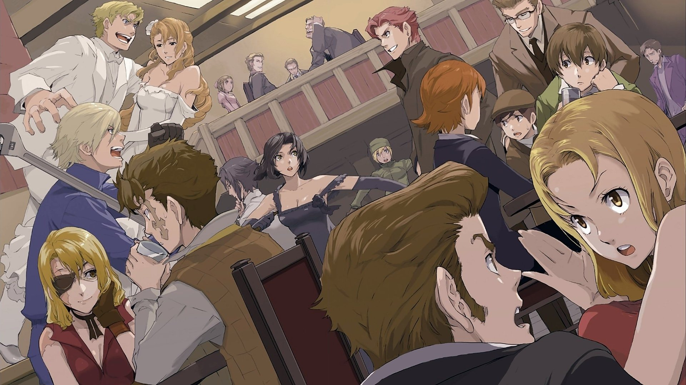

Anime

Lien de l'anime : Baccano!
Genres : Action, Aventure, Surnaturel, Mystère
Nombre d'épisodes : 13
Nombre de saisons : 1
Statut : Terminé
Date de diffusion : 2007
Opening : 10/10
Ending : 7.5/10
Date de la critique : 17 août 2026
Note de l'anime
Texte de la note.
Synopsis
En 1711, dans un bateau à destination des Etats-Unis, des alchimistes invoquèrent le démon pour obtenir la vie éternelle. Celui-ci leur fit boire un breuvage qui leur assura l'immortalité et la jeunesse éternelle. Mais ce terrifiant pouvoir provoqua des conflits entre les alchimistes et ceux-ci se dispersèrent pour échapper à ceux d'entre eux, qui, avides de pouvoir, voudraient les faire disparaître. 1930, Etats-Unis d'Amérique. Bien que plus de 200 ans se soient écoulés, les destins des alchimistes restants et celui de plusieurs personnes vont se croiser par un concours de circonstances. Tous vont se retrouver embarqués dans les affaires mêlant conflits entre différents clans de la mafia, le mystérieux élixir, et un couple de voleurs particulièrement excentriques.